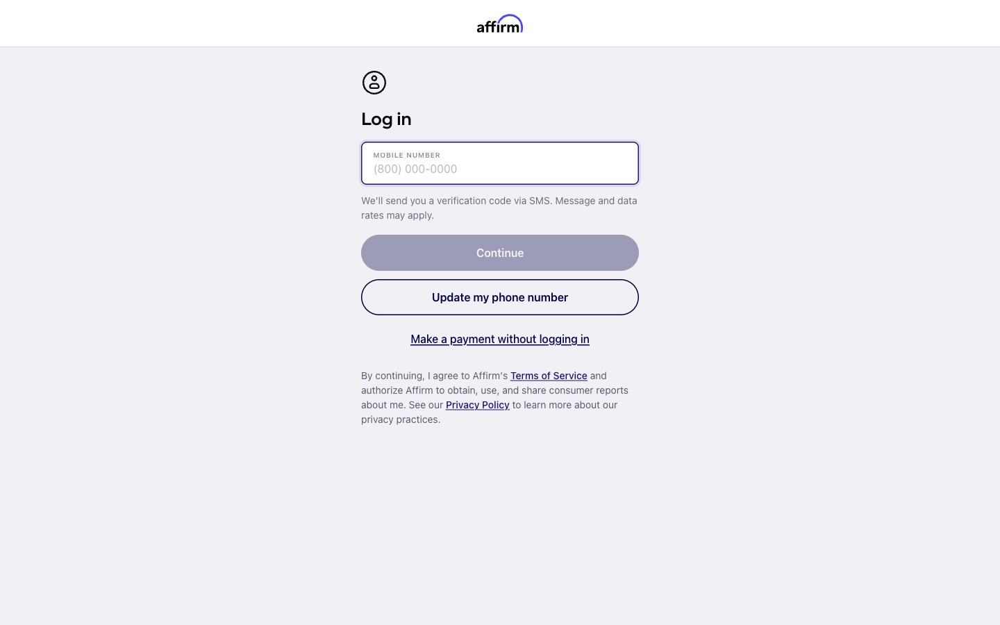
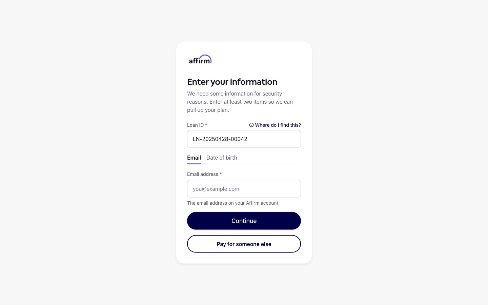
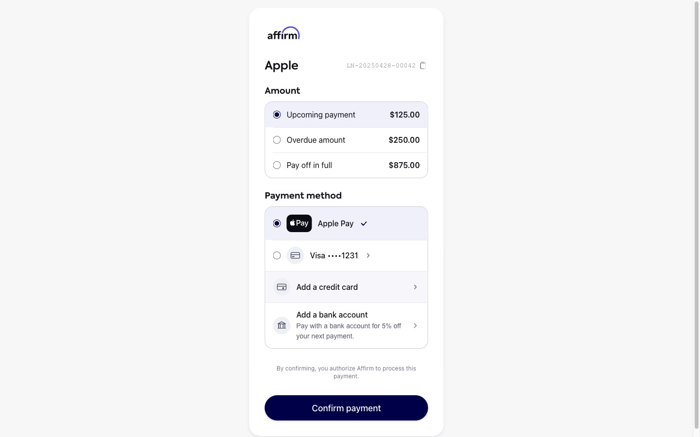
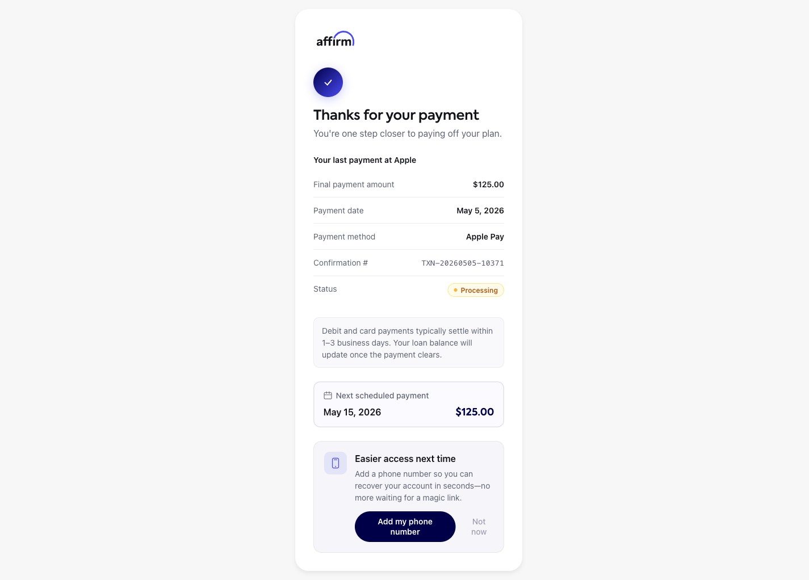

Hackathon · May 2026 · 2 days
Payment
Rescue
A self-serve payment path for locked-out Affirm users. Built in 48 hours. The insight: Affirm uses one auth gate for two different trust contracts — and it optimizes for the wrong one.
Role
Product Design,
Frontend Eng
Frontend Eng
Team
Rachel · Anupama
Caio · Bart · Krzysztof
Caio · Bart · Krzysztof
Stack
React · TypeScript
Vite · Framer Motion · MSW
Vite · Framer Motion · MSW
Estimated at-risk GMV
$120M/yr

Sign-in screen Entry
Verification form Identity Email OTP
Auth
Email OTP
Auth

Payment Pay
Confirmed Done